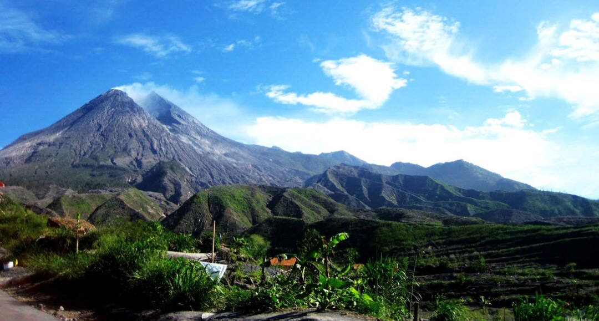
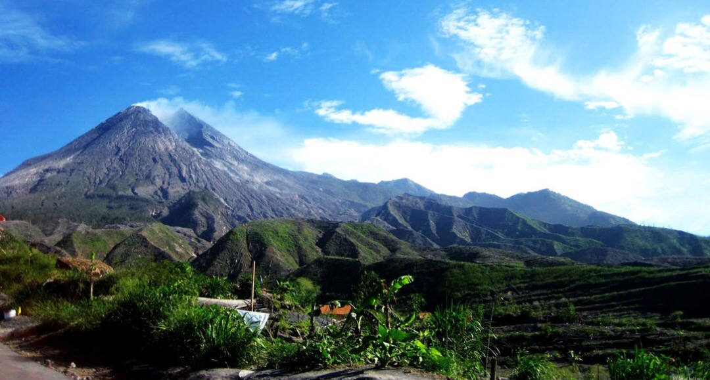

DISCOVER YOGYAKARTA
THE CULTURAL HEART OF JAVA
A CITY THAT EMBODIES THE ESSENCE OF CULTURAL RICHNESS AND HISTORICAL DEPTH
Step into
Yogyakarta
Yogyakarta (also known as Jogjakarta) stands as a beacon of Indonesia's rich cultural heritage. This vibrant city captivates visitors with its stunning historical landmarks, including remarkable temples and royal palaces.
The city offers a rich tapestry of tradition and culture, showcasing its unique history through immersive experiences and enchanting local customs.
ATTRACTION


 

Photo by xiquinhosilva, used under CC BY 2.0.
Photo by Francisco Anzola, used under CC BY 2.0.
Photo by Shankar S., used under CC BY 2.0.